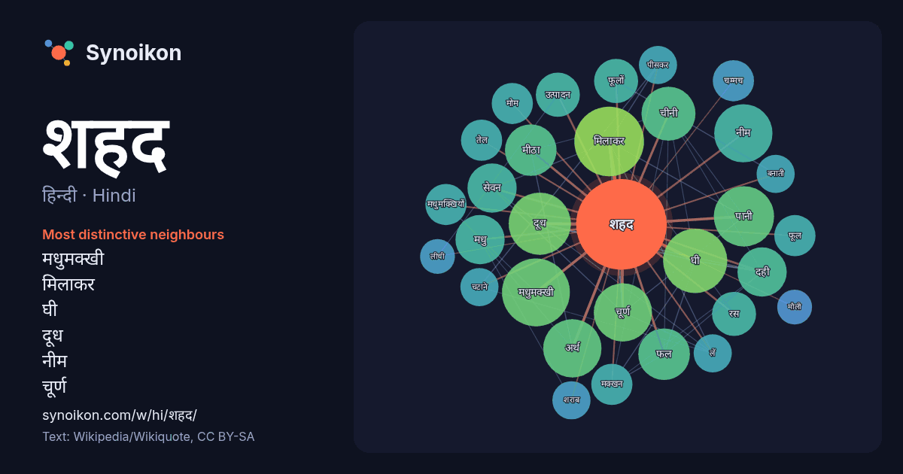

हिन्दी · Hindi · word of the day list
शहद
“honey” · The words found around it in 350 instances from Hindi Wikipedia, Wikiquote.

Most distinctive neighbours
- मधुमक्खी 20×
- मिलाकर 18×
- घी 18×
- दूध 15×
- नीम 15×
- चूर्ण 15×
- मीठा 12×
- दही 11×
- मधु 11×
- चीनी 11×
- फल 10×
- सेवन 10×
- पानी 9.9×
- अर्थ 8.8×
- फूलों 8.6×
- रस 8.2×
- मधुमक्खियों 7.9×
- चम्मच 7.9×
- मक्खन 7.9×
- मोम 7.8×
× = how many times more often than in general Hindi Wikipedia text.
Most frequent neighbours
- मिलाकर 20
- मधुमक्खी 19
- घी 17
- दूध 16
- पानी 15
- अर्थ 14
- चूर्ण 14
- नीम 14
- चीनी 12
- फल 11
- मीठा 11
- दही 10
- मधु 10
- सेवन 10
- उत्पादन 8
- चाहिए 8
- फूलों 8
- रस 8
- वाली 8
- चम्मच 7
In context
- अगर आप 'मधु' शब्द के बारे में लेख ढूंढ रहे हैं तो मधु (शब्द) देखिए मधु या शहद एक मीठा, चिपचिपाहट वाला अर्ध तरल पदार्थ होता है जो मधुमक्खियों द्वारा पौधों Wikipedia snippets · मधु
- नीम नीम शहद शहद एक भारतीय हिंदी भाषा की ड्रामा सीरीज़ है, जिसका प्रीमियर 15 अगस्त 2011 को सहारा वन पर हुआ था। श्रृंखला का निर्माण क्रिएटिव आई लिमिटेड Wikipedia snippets · नीम नीम शहद शहद
- सबसे कम शहद एकत्र करने वाली मधुमक्खी है। शहद के मामले में न सही लेकिन परागण के मामले में इसका योगदान अन्य मधुमक्खियों से कम नहीं है। इसके शहद का स्वाद Wikipedia snippets · मधुमक्खी
- भारत में पाई जाती हैं जो कि प्राकृतिक शहद और मोम उत्पादन के लिए व्यावसायिक रूप से महत्वपूर्ण हैं। मधुमक्खी, शहद और मधुमक्खी पालन का उल्लेख भारत के विभिन्न Wikipedia snippets · भारत में मधुमक्खी पालन
- के रस को शहद में बदल देती हैं और उन्हें छत्तों में जमा करती हैं। जंगलों से मधु एकत्र करने की परंपरा लंबे समय से लुप्त हो रही है। बाजार में शहद और इसके Wikipedia snippets · मधुमक्खी पालन
- शर्करा-सम्पन्न होता है। शहद में जो मीठापन होता है वो मुख्यतः ग्लूकोज़ और एकलशर्करा फ्रक्टोज के कारण होता है। शहद का प्रयोग औषधि रूप में भी होता है। शहद में ग्लूकोज Wikipedia snippets · मधुरस
- भारतीय टेलीविजन अभिनेत्री है, जो हिंदी टेलीविजन नाटक श्रृंखला, नीम नीम शहद शहद, स्वरागिनी - जोड़ें रिश्तों के सुर में दिखाई देती है। ख्याति मंगला का जन्म Wikipedia snippets · ख्याति मंगला
- मधुर का अर्थ होता है शहद की तरह मीठा। मधुर वाणी सबको मोह लेती है। पति-पत्नी का रिश्ता काफी मधुर होता है। मधुर व्यव्हार अचानक कठोर हो गया। खाहिं मधुर फल Wikipedia snippets · मधुर
More Hindi words
- इतिहास
- ईश्वर
- कार्य
- कुत्ता
- गर्मी
- गाना
- घंटी
- घड़ी
- घोड़ा
- चाय
- चित्रकला
- छाया
- जंगल
- जलवायु
- जीवन
- तूफ़ान
- दर्पण
- द्वीप
- नक्षत्र
- नमक
- परिवार
- पहाड़
- पानी
- पैसा
- प्रकृति
- बगीचा
- बिल्ली
- भाषा
- भोजन
- माता
- मानचित्र
- मृत्यु
- मौन
- रेगिस्तान
- रेलगाड़ी
- रोटी
- वर्षा
- विज्ञान
- शक्ति
- शरद
- शहर
- सड़क
- सत्य
- समय
- सर्दी
- सेतु
- स्वर्ण
- स्वास्थ्य
- हृदय
Precomputed on 2026-10-09 with default settings (±5 words, medium corpus). The interactive map can refresh it with live data.